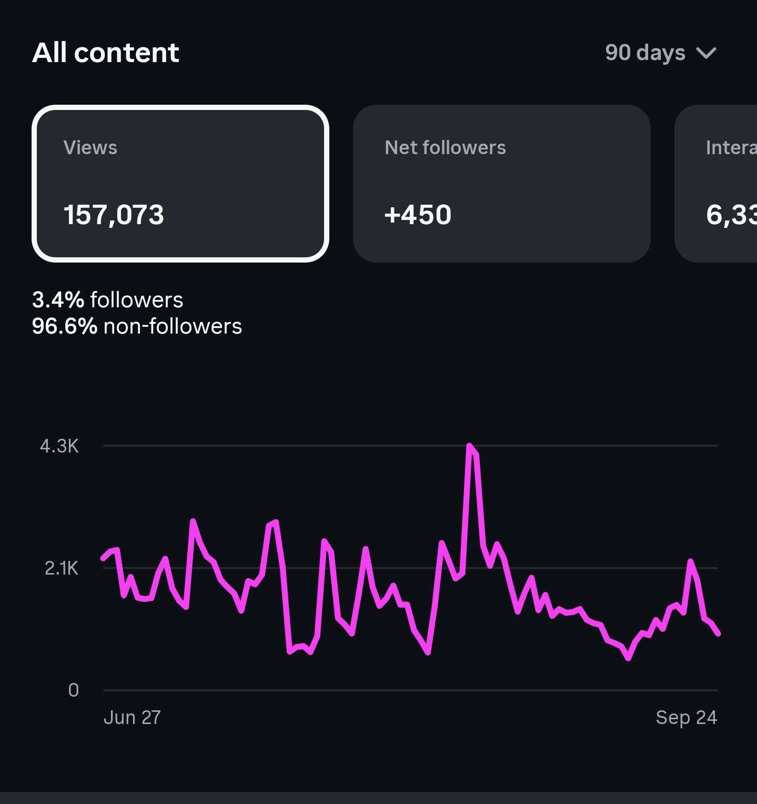
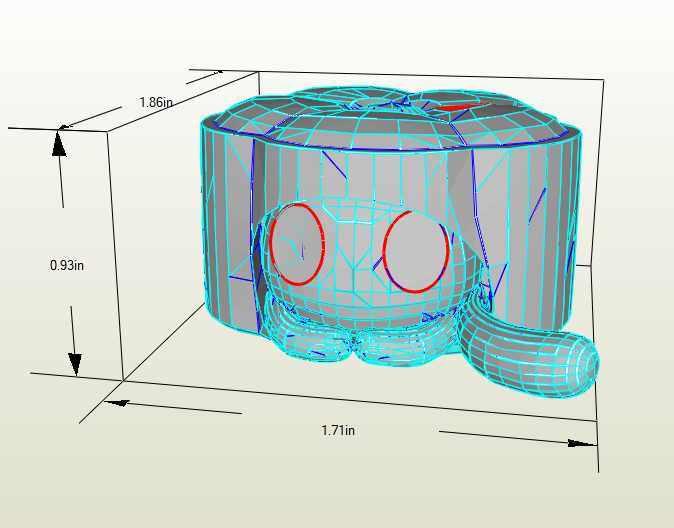

03 / selected strengths
Things I
bring.
A mix of technical skills, communication experience, and creative tools I bring to each opportunity.
01
Python, Java, JavaScript, C#, UI design, and a foundation in software development and computer science ethics.

02Customer service, leadership, tutoring, social media management, and communication.

03Experience with Blender, Unity, Art Software, and other creative tools.
More work is in progress.Ask me what I’m making next ↗